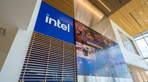
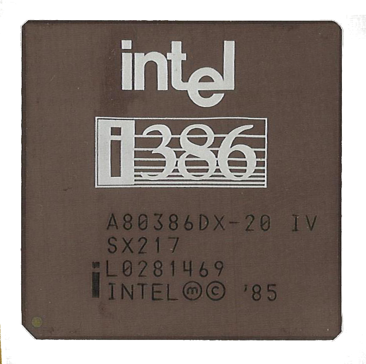
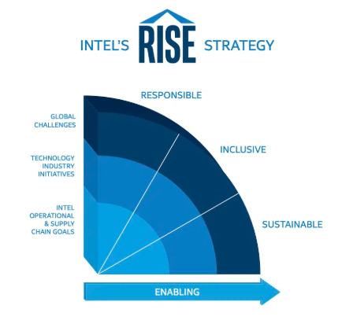

1968
Intel Founded
Robert Noyce and Gordon Moore rename NM Electronics to Intel Corporation, setting the stage for computing breakthroughs.
Explore Intel's journey through time and discover how innovation, responsibility, and sustainable design have shaped the future of technology.
Each card highlights a milestone in Intel's history. Hover over a photo to reveal a richer visual detail and learn more about Intel's progress.

Robert Noyce and Gordon Moore rename NM Electronics to Intel Corporation, setting the stage for computing breakthroughs.

Intel debuts the 4004, the world's first commercial microprocessor, launching the era of programmable computing.

The 8086 processor launches, helping establish the x86 architecture that still powers modern PCs and servers.

Intel introduces the 386 processor, bringing 32-bit architecture and advanced multitasking to a broader marketplace.

Intel reaches its highest annual greenhouse gas emissions and begins a major investment in clean energy, efficiency, and abatement.

Intel launches RISE — Responsible, Inclusive, Sustainable, Enabling — with ambitious goals for the next decade.

Intel announces a global commitment to reach net-zero Scope 1 and 2 greenhouse gas emissions by 2040.

Intel reaches 99% renewable electricity usage across its global facilities, a major sustainability milestone.
Intel hosts a global Sustainability Summit, bringing together leaders to accelerate sustainable semiconductor manufacturing.
Driving technological advancement while minimizing environmental impact through cutting-edge research and development.
Committing to ethical practices and transparent reporting of our environmental and social impact metrics.
Building a future where technology and environmental stewardship go hand in hand, creating lasting positive change.